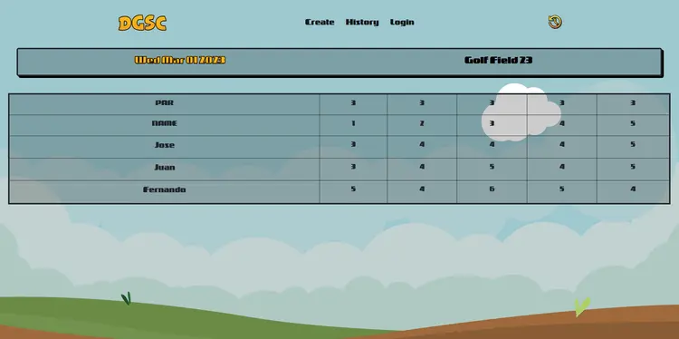
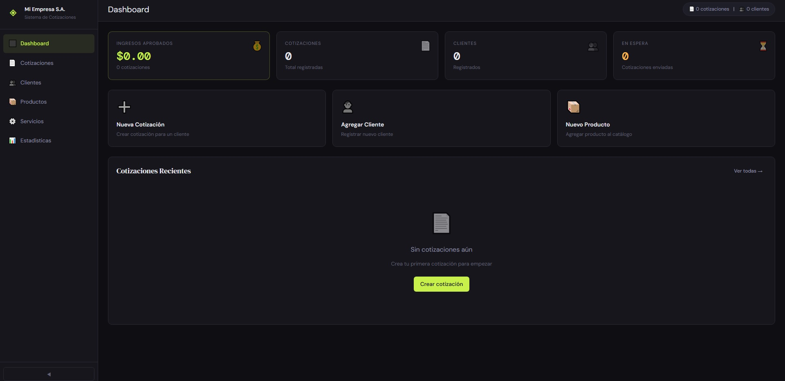

Aplicaciones fullstack construidas con Next.js y React, del primer wireframe al deploy en producción, incluyendo la base de datos y la lógica de negocio detrás.

Tarjeta de puntaje para disc golf. Login, historial de rondas y ubicación del campo en mapa.

Generador de cotizaciones profesionales: clientes, catálogo, totales automáticos y exportación a PDF.